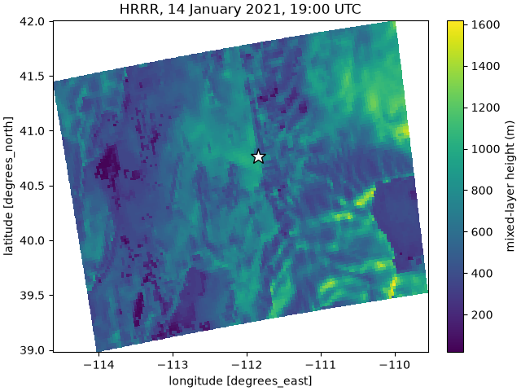

Meteorology#
STILT moves its particles with the winds, temperatures and turbulence of a weather model, so a footprint can only be as good as the meteorology behind it. Choose a weather product first, then point PYSTILT at its files or let it download them, and crop them to your region so runs stay fast.
PYSTILT reads meteorology in the format of NOAA’s Air Resources Laboratory (ARL), the format HYSPLIT reads. NOAA publishes ARL files for HRRR, NAM, GDAS, GFS and other models, and many research groups keep an archive of them.
Which weather product#
Choose the finest product that covers your place and years. Air near a city is steered by valleys, coastlines and the depth of the mixed layer, and a coarse grid smooths all three away.
Product |
Grid |
Covers |
Use it for |
|---|---|---|---|
HRRR ( |
3 km, hourly |
Contiguous US, June 2015 on |
Cities and towers in the US. This is our default. |
NAM ( |
12 km, 3-hourly |
North America, 2007 on |
US work before mid-2015, and Canada and Mexico. |
GFS and GDAS ( |
0.25 to 1 degree |
The globe |
Places no regional product covers, and long runs that cross continents. |
ERA5 |
0.25 degree, hourly |
The globe, 1940 on |
Long, consistent records. You convert it to ARL yourself (ERA5 below). |
If you run the same receptors with two products, give each its own met and its own variant, and compare the footprints (Projects And Variants).
Use files you already have#
Give each met a name and the folder that holds its files:
mets:
hrrr: /data/met/hrrr
That is all PYSTILT needs. It reads the header of each ARL file to learn
which hours the file holds, so the files can have any names and can sit in
subfolders, such as one folder per year. A variant named after a met
(hrrr here) runs with it.
To see what PYSTILT will read for a run, ask the met which files cover the run’s hours. For a receptor at 19:00 UTC on 14 January 2021, followed 12 hours back:
In [1]: from stilt.meteorology import run_window
In [2]: from stilt.transport.hysplit import Met, MetConfig
In [3]: hrrr = Met("hrrr", MetConfig(directory=met_dir))
In [4]: window = run_window("2021-01-14 19:00", n_hours=-12)
In [5]: window
Out[5]: (Timestamp('2021-01-14 07:00:00'), Timestamp('2021-01-14 19:00:00'))
In [6]: [f.name for f in hrrr.files_for(window)]
Out[6]:
['20210114_06-11_hrrr.crop_-114.00_39.00_-110.00_42.00',
'20210114_12-17_hrrr.crop_-114.00_39.00_-110.00_42.00',
'20210114_18-23_hrrr.crop_-114.00_39.00_-110.00_42.00']
These HRRR files hold 6 hours each, so three of them cover the 12 hours. A 24-hour run would need files from the 13th as well, and this folder has none:
In [7]: hrrr.missing(run_window("2021-01-14 19:00", n_hours=-24))
Out[7]: [(Timestamp('2021-01-13 19:00:00'), Timestamp('2021-01-14 06:00:00'))]
A run with hours missing stops before HYSPLIT starts, and says which hours
they are. stilt check makes the same search for every receptor in a
project, so run it before you submit a batch (Checking A Run).
Each file holds gridded fields for every hour it covers. Here is the mixed-layer height at the receptor’s hour. It is about 600 m over the receptor (the star), and ranges from under 100 m to over 1,500 m across the region, which is the kind of detail a coarser product would lose:
In [8]: import arlmet
In [9]: import matplotlib.pyplot as plt
In [10]: ds = arlmet.open_dataset(hrrr.files_for(window)[-1], levels=[0])
In [11]: pblh = ds["PBLH"].sel(time="2021-01-14 19:00")
In [12]: fig, ax = plt.subplots(layout="constrained")
In [13]: pblh.plot(x="lon", y="lat", ax=ax, cbar_kwargs={"label": "mixed-layer height (m)"})
Out[13]: <matplotlib.collections.QuadMesh at 0x7cdcacad1310>
In [14]: ax.plot(-111.848, 40.766, marker="*", markersize=14, color="white", markeredgecolor="black")
Out[14]: [<matplotlib.lines.Line2D at 0x7cdcac910ec0>]
In [15]: ax.set_title("HRRR, 14 January 2021, 19:00 UTC");


Keep each product in its own folder. If an HRRR file and a NAM file in one folder both hold the same hour, PYSTILT cannot tell which one you meant, and the run stops and names both files.
The first time PYSTILT reads a large archive, it builds a table of what
each file holds. For tens of thousands of files on a network disk this
takes a few minutes, and stilt check is a good time to do it. Later
runs read the table and find new files on their own.
Download from NOAA#
If you have no ARL files, PYSTILT can download them from NOAA’s archive. Name the archive and the folder to keep the files in:
mets:
hrrr:
download: hrrr
directory: /data/met/hrrr
Downloading needs the download extra
(pip install "pystilt[download]"). Each simulation downloads the files
its run needs and leaves them in directory, so later runs reuse them.
Warning
NOAA’s files cover a continent or the globe, and each one is several gigabytes. Crop them to your region (below), so that only a small copy is kept, and download on a machine with a fast connection.
The archives you can name are:
Name |
Product |
Domain |
Period |
|---|---|---|---|
|
HRRR 3 km analysis |
CONUS |
Jun 2019 to present |
|
HRRR 3 km analysis, version 1 |
CONUS |
Jun 2015 to 2019 |
|
NAM 12 km analysis |
North America |
May 2007 to present |
|
NAMS hybrid sigma-pressure |
CONUS, Alaska, Hawaii |
Jan 2010 to present |
|
GDAS 1 degree |
Global |
Dec 2004 to present |
|
GDAS 0.5 degree |
Global |
Sep 2007 to mid 2019 |
|
GFS 0.25 degree |
Global |
Jun 2019 to present |
|
NCEP/NCAR Reanalysis, 2.5 degree |
Global |
1948 to present |
|
North American Regional Reanalysis, 32 km |
North America |
1979 to 2019 |
Some archives take an option of their own, written beside the others.
nams takes a domain (conus, the default, ak or hi):
mets:
nams-ak:
download: nams
domain: ak
directory: /data/met/nams-ak
Files come from NOAA’s archive on Amazon S3. If that is slow or blocked
where you are, set download_from to ftp or http.
Crop to your region#
Most runs need only a small part of a weather model’s grid. Cropping the files to a box around your region makes each run read less and use less memory, which matters most for global products and on cluster nodes.
mets:
hrrr:
directory: /data/met/hrrr
subgrid_enable: true
subgrid_bounds: {xmin: -114, xmax: -110, ymin: 39, ymax: 42}
subgrid_dir: /scratch/met_crops
Make the box larger than your footprint grid. A particle that leaves the box stops, just as it would at the edge of the weather model’s grid, so a box that is too tight quietly cuts off the far end of a footprint. Plot the particles of a few runs (Footprints And Particles) to see how far they go.
With your own files, PYSTILT crops each file the first time a run needs
it, writes the copy to subgrid_dir and reuses it after that.
subgrid_dir is required, so that PYSTILT never writes into your
archive. It reads your files where they are and changes none of them.
Scratch space suits it, and several projects with the same box share the
copies. PYSTILT finds the crops by their headers, as it finds your files, so
a folder of crops copied from another machine works even where the archive
is not. With download, each file is cropped as it arrives and only the
crop is kept, so subgrid_dir is not needed.
subgrid_levels: 20 also keeps only the lowest 20 levels, which helps
for runs that stay in the lower atmosphere.
ERA5#
ERA5, ECMWF’s reanalysis, is not published in ARL format, and PYSTILT does not convert it, so convert it to ARL first. Then it is a met like any other. We recommend two settings that differ from the defaults:
mets:
era5: /data/met/era5
variants:
era5:
met: era5
kbls: 2 # stability from the wind and temperature profiles
kmixd: 0 # ERA5's own boundary-layer height
ERA5’s friction velocity is too small (ECMWF’s documentation says so), and
the stability HYSPLIT derives from it by default can leave too little
mixing, so kbls: 2 derives it from the profiles instead. HYSPLIT would
otherwise estimate the boundary-layer height from ERA5’s pressure levels,
about 200 m apart near the ground, so kmixd: 0 uses the height ECMWF
computed on its model levels. The converted files need that field (PBLH).
What a run records#
Each run records which weather product it used, read from the files’ headers, and the crop:
In [16]: MetConfig(directory=met_dir).settings()
Out[16]: {'source': 'HRRR', 'crop': None}
It does not record where the files are or what they are named. You can move your archive, or switch to a copy with different names, and every run already made still counts. Two products in folders named alike, such as HRRR and NAM, still give different results folders.
When the meteorology is the problem#
A run whose files are missing, damaged or cut short fails before HYSPLIT
starts, as MET_COVERAGE, and its message names the file or the hours.
A run whose particles all leave the met’s domain is a success, with a
footprint of the hours they were inside it. Checking A Run explains each
failure and what to do about it, and Meteorology gives
the exact rules for which files a run reads.